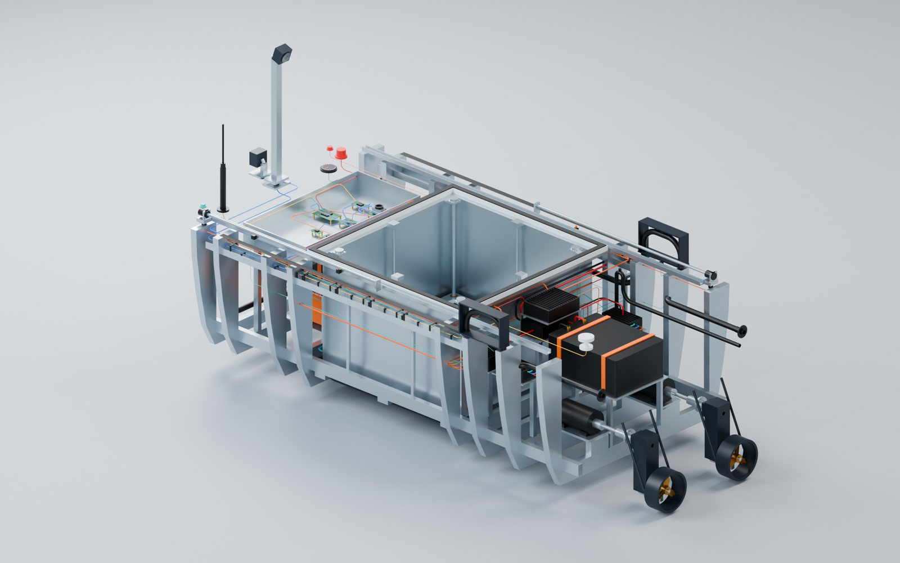

The drone
A Holybro X500 V2 quadrotor with a pan-tilt camera, flown by the unmodified PX4 autopilot.
- Mass
- 2.07 kg
- Camera
- 640 × 360, 25 Hz
- Autopilot
- PX4 1.16
- Parts
- about €1,760
A boat does not wait. It moves, turns, and rises and falls with every wave. The drone has to find it, catch up, and set down at the one moment the deck is safe.
Three small neural networks look at the camera image and report what they see. Control code and the PX4 autopilot do the flying. An earlier network that flew the drone directly landed in none of its test flights.
Both were modelled part by part in FreeCAD and brought into the physics simulation with their real mass, joints and collision shapes.
A Holybro X500 V2 quadrotor with a pan-tilt camera, flown by the unmodified PX4 autopilot.


A drone-carrying boat. Two lids slide open and a platform lifts the landing pad above the deck.
All training happened in MuJoCo, a physics simulator with simple graphics. Tidewater is an open-source ocean game we extended. The policy never saw it during training, and lands there anyway.
Accurate physics, plain rendering. Five kinds of coast, random routes, wind, waves and other boats. PX4 runs in step with the physics.
A realistic ocean rendered in the browser. The same physics, autopilot and policy run locally — no server. You can fly it yourself and hand over to the policy with one key.
Every policy flies the same 20 missions on five kinds of coast: boat speeds up to 1.5 m/s, 4 m/s crosswind, waves, a search from 100 m away and other boats in the scene. A landing counts only if the drone ends up disarmed and stable on the pad.
It landed 18 of 20 using only its camera and its own sensors: boat speeds up to 1.5 m/s, 4 m/s crosswind, waves, and the search from 100 m with other boats in the scene.
Both missions that combine everything at once: wind, waves, a 100 m search and other boats. In one the drone never confirmed the right boat; in the other it came down to 30 cm above the pad, lost sight of it and hit the boat. Everything so far is simulation; there has been no flight with real hardware.
The teacher uses simulator information a real drone would not have. It produces the training examples and marks the upper limit; it is not a deployable policy. Benchmark data and every flight
Drone and boat from CAD, water and wind physics, and the real PX4 autopilot in the loop.
A network trained to copy the teacher's commands landed in none of its 12 test flights. Every small mistake changed what it saw next.
From here on the networks only estimate where the boat and the pad are, and control code flies. The first version leaned on the boat's radio: 7 of 20, and none of the six missions without it.
Trust the camera for position. 11 of 20, but it landed only half of the missions that start with a search.
A small network that marks every boat and picks out the target, trained while the main network stayed frozen. 18 of 20, camera only.
In Tidewater the drone now flies to the boat's radio position first and lets the camera confirm it. Not yet scored on the benchmark.